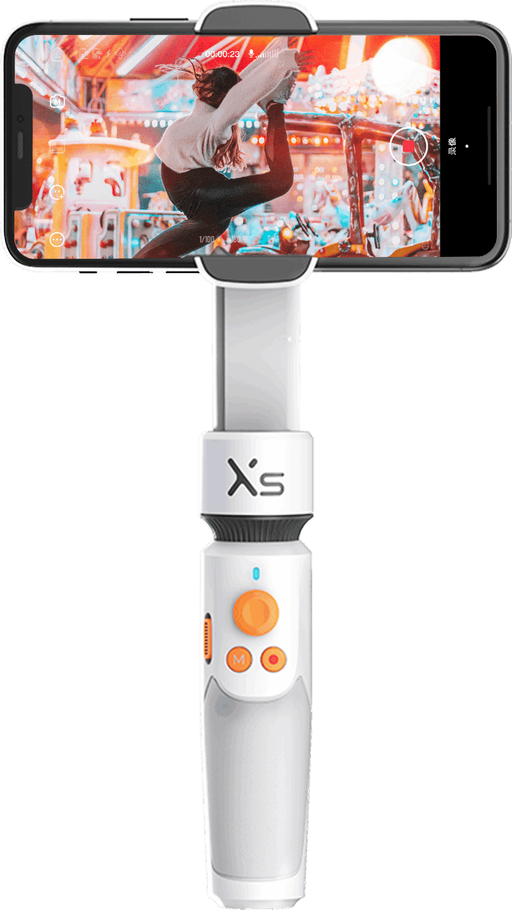

Where the latest premium camera accessories are!

Hottest item ~ Zhiyun SMOOTH-XS
The SMOOTH-XS is a 2-axis gimbal stabilizer lets you attach and balance your phone in just seconds. It supports phones up to 3.5" wide, including the iPhone XS Max, and it runs for up to 5.5 hours on a built-in battery. Not only is the gimbal ultracompact, but it's also collapsible for even more portability. The upper section slides down to make storage and travel easier. When ready to shoot, just slide that section up and begin, or telescope out the integrated selfie stick for even more capability. The selfie stick extends up to 10.2", allowing you to capture shots from more angles as well as shoot selfie and vlog videos. Also, with a simple button press, you can switch from landscape to portrait mode to start live streaming to social media platforms such as Instagram.
Key Features
- 2-axis motorized stabilization (pan/roll)
- Built-in 10.2" selfie stick
- Collapsible, ultracompact design
- ZY Cami iOS/Android companion app
- Hand gesture recording for vlogs and tutorials
- SmartFollow 2.0 automatic subject trackingp
- One-touch beautification function
- Supports phones up to 3.5" wide, including the iPhone XS Max (requires iOS 10.0 or higher or Android 7.0 or higher)
$450
The rotatable structure in palm size that allows you to toss in a backpack conveniently, an extendable grip made for exploring bigger vision, and a handy App - ZY Cami, for making videos rock everybody! Meet Smooth X and explore your EXTRA life! Simplicity is the king. SMOOTH-X brings unimaginable simple and smooth operation experience: shoot, film, with only three buttons.
$700
ZHIYUN has come a long way in exploring the ultimate compact form factor without any compromise in functionality. We turned our eye of precision and dedication into every detail, to deliver a beauty of pure simplicity to filmmakers of all levels. Introducing SMOOTH-Q2, the engaging gimbal ready to work without any fuss, the ultimate smartphone gimbal redefining the concept of compactness.
$500
Zhiyun Smooth 4 turns your mobile phone into a professional filmmaking camera, helping you create stable and smooth footage with just your phone. The design of integrated control panel can reduce the need to touch the screen, and help users control both the stabilizer and mobile camera directly with hot-key buttons. Get one now to create your own Hollywood movies with just phones!